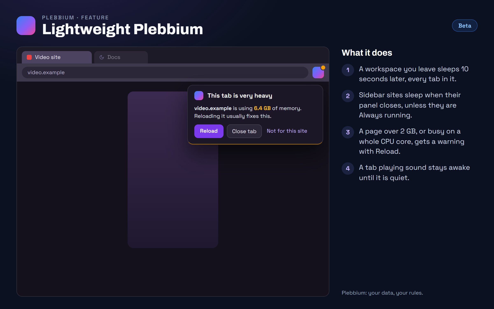

All features › In Beta › Lightweight Plebbium
Lightweight Plebbium
Betasince 3621Plebbium frees the memory of what you aren't looking at: a workspace you leave sleeps after 10 seconds, sidebar sites sleep when closed unless you keep them running, and a page that grows huge or keeps the CPU busy gets a warning with Reload.

How to use it
- Switch workspace as usual: the one you leave sleeps 10 seconds later. Come back within 10 seconds and nothing reloads.
- Right-click a sidebar site and tick Always running for the ones that must stay awake, like music or mail. The rest sleep when their panel closes.
- When Plebbium says a page is very heavy, press Reload. Sleep it frees the memory until you open it again; Not for this site stops the warnings there.
- Plebbium settings › Performance sets when it warns: above 1, 2 or 4 GB, or never.
When it arrived
156.0.8078.3621Beta 13 Nov 2026 · not on Stable yet
Hidden workspaces and closed sidebar sites sleep; the heavy-page watchdog; a lighter blocker on busy pages.
Why it works this way
Memory goes to what you see
A browser's memory is mostly its pages. Pages you can't see, in another workspace or a closed sidebar panel, shouldn't hold on to it.
Catch the runaway
Now and then a single page grows without end. Plebbium notices it in minutes instead of leaving you to find it in Task Manager.
Chromium stays the engine
A rewrite on another engine was compared and would not be lighter: the memory is in the pages, not the browser around them.